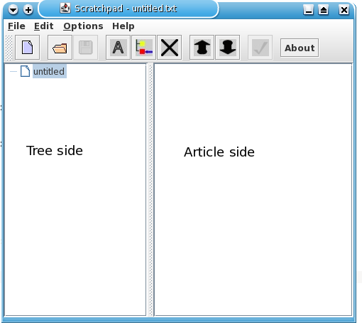
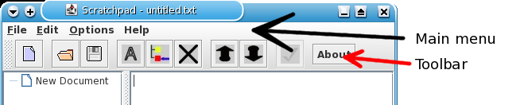

Description
Scratchpad is a program that organizes notes in a category structure. The tree side, on the left,
is where the category/subject is located. The "notes" for that category/subject will be edited/displayed
on the right side.
ScratchPad Layout
- Tree
- - left side of the window. This is where the subject for each article is located.
- Article
- - right side of the window. This is where the article text is displayed.

- Menu bar
- - the menu bar contains all the tools and features that this program has to offer
- Tool bar
- - contains the most commonly used features.
